预告 · 2026 LALM
我们
知道
We Know
LALM 项目资料交流展
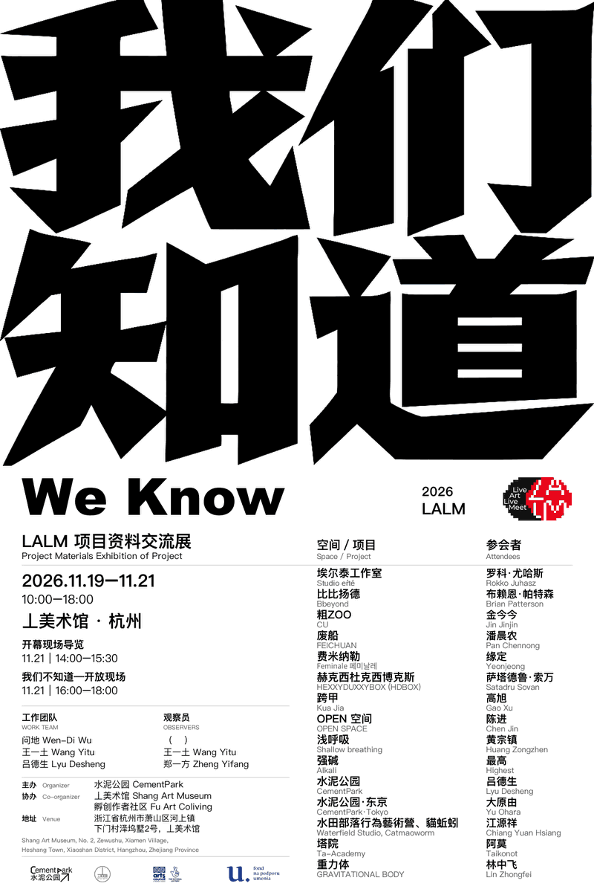
2026.11.19–11.21 ｜ 10:00–18:00
丄美术馆 · 杭州
开幕现场导览 11.21｜14:00–15:30
我们不知道—开放现场 11.21｜16:00–18:00
我们知道 We Know｜2026 LALM
本次展览包含一个现场艺术相关活动的材料展示和一个开放现场，围绕我们知道和我们不知道展开一些交流和现场呈现，也是LALM(Live Art Live Meet)线下活动的一次尝试。
展览× 特别活动
看看不同地方的艺术现场如何发生，也一起期待新的可能。
展览：2026.11.19–11.21｜10:00–18:00
11.21 SAT｜周六特别活动
14:00–15:30｜展览导览
从海报、影像到各类现场活动材料，走近不同地区的艺术实践，听听这些现场背后的故事。
16:00–18:00｜我们不知道-开放现场
一场尚未决定的开放现场。
来自不同地区、城市的艺术家将在交流与讨论中共同构想这场活动。至于会发生什么？我们也还不知道。
欢迎来到现场，一起发现。
空间／项目—参会者
埃尔泰工作室 — 罗科·尤哈斯
Studio eŕté — Rokko Juhasz
比比扬德 — 布赖恩·帕特森
Bbeyond — Brian Patterson
粗 — 金今今
ZOO — Jin Jinjin
废船 — 潘晨农
FEICHUAN — Pan Chennong
费米纳勒 — 缘定
Feminale 페미날레 — Yeonjeong
赫克西杜克西博克斯 — 萨塔德鲁·索万
HEXXYDUXXYBOX (HDBOX) — Satadru Sovan
跨甲 — 高旭
Kua Jia — Gao Xu
OPEN 空间 — 陈进
OPEN SPACE — Chen Jin
浅呼吸 — 黄宗镇
Shallow breathing — Huang Zongzhen
强碱 — 最高
Alkali — Highest
水泥公园 — 吕德生
CementPark — Lyu Desheng
水泥公园·东京 — 大原由
CementPark·Tokyo — Yu Ohara
水田部落行為藝術營、貓蚯蚓 — 江源祥
Waterfield Studio, Catmaoworm — Chiang Yuan Hsiang
塔院 — 阿莫
Ta-Academy — Taikonot
重力体 — 林中飞
GRAVITATIONAL BODY — Lin Zhongfei
空间／项目介绍
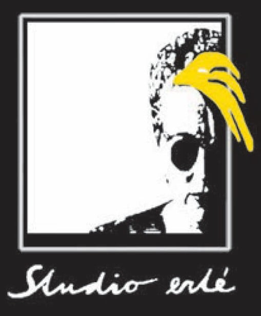
埃尔泰工作室
Studio eŕté ｜ 罗科·尤哈斯 Rokko Juhasz
跨艺术交流艺术节（Transart Communication Festival）是中欧最负盛名、历史最悠久的国际行为表演与多媒体艺术平台之一。该艺术节由艺术团体 Studio erté 于1987年在捷克斯洛伐克（现斯洛伐克）的新扎姆基（Nové Zámky）创立，最初是作为一座至关重要的桥梁，旨在重新连接被分割的文化版图中的另类与地下艺术家。
在过去的几十年里，跨艺术交流经历了令人难以置信的蜕变，从一个区域性倡议扩展为国际跨媒介网络中享誉全球的焦点。它成为捷克斯洛伐克首个系统性地将边界流派、行动艺术、声音诗歌、邮件艺术、实验音乐和视频装置汇聚于单一平台的艺术节。
Transart Communication Festival
The Transart Communication Festival is one of the most prestigious and long-standing international platforms for performance and multimedia art in Central Europe. Established in 1987 by the art association Studio erté in Nové Zámky, Czechoslovakia (now Slovakia), the festival originally emerged as a crucial bridge to reconnect alternative and underground artists across divided cultural landscapes. Over the past decades, Transart Communication has undergone an incredible metamorphosis, expanding from a regional initiative into a globally recognized focal point within the international intermedia network. It became the first festival of its kind in Czechoslovakia to systematically unite boundary genres, action art, sound poetry, mail art, experimental music, and video installations on a single platform.
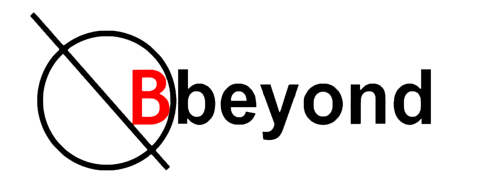
比比扬德
Bbeyond ｜ 布赖恩·帕特森 Brian Patterson
Bbeyond致力于在北爱尔兰及更远地区推广行为艺术实践与艺术家。我们的目标是提升人们对现场/行为艺术的认知，使其被视为我们周遭世界不可或缺的一部分，从而激发思考并丰富生活体验。
我们邀请在国际行为艺术界享有盛誉的艺术家，并鼓励新锐艺术家亲自体验行为艺术实践。
Bbeyond通过促进积极的私人与公众参与模式，鼓励更多人接触和欣赏这种以视觉为基础的艺术形式，让社会各阶层（而不仅仅是传统艺术界）的人们都能直接体验和享受行为艺术。
Bbeyond is committed to promoting the practice of performance art and artists in Northern Ireland and further afield. Our aim is to raise people’s consciousness of live/performance art as being integral to the world in and around us, inspiring reflection and enriching lived experience.
We host artists of international reputation throughout the performance art world and encourage newer artists to experience performance art practices for themselves.
Bbeyond encourages greater access to and appreciation of this visually based art form, through facilitating modes of active private/public participation, allowing people from all sectors of society, not just the traditional arts, to experience and enjoy performance art directly.
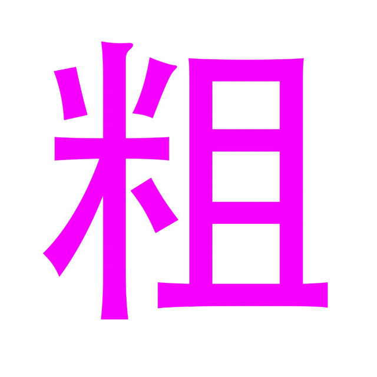
粗
ZOO ｜ 金今今 Jin Jinjin
粗是随时随地活跃的自由艺术小组。粗的创作表达不限媒介。我们倾向于没有常识，改变习惯，无视规则，消解概念，一无所知的穿透一切，来到可能性的面前。我们天天感到快乐。
ZOO is a free-spirited art collective active everywhere, at any time. ZOO's creative expression is not limited by any medium. We lean toward having no common sense, changing habits, ignoring rules, dissolving concepts, and piercing through everything with total ignorance, arriving at the threshold of possibility. We feel happy every single day.
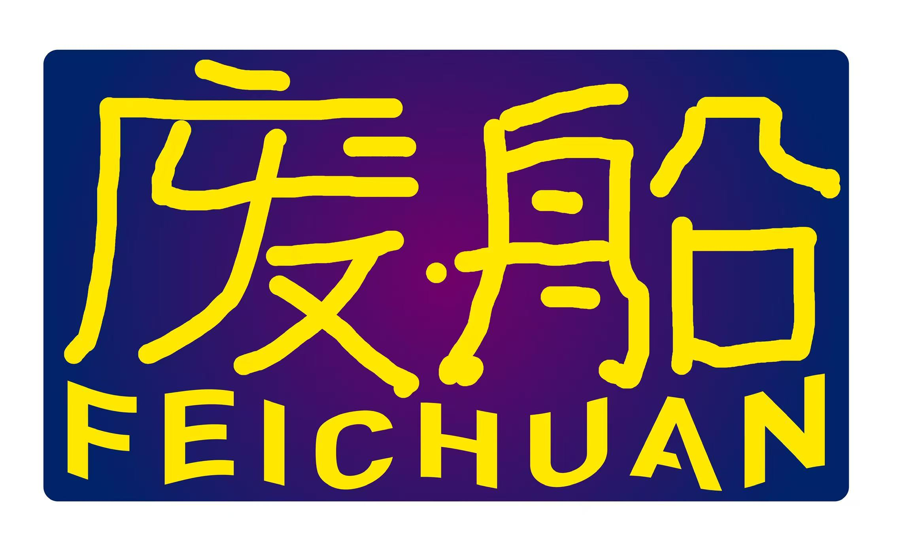
废船
FEICHUAN ｜ 潘晨农 Pan Chennong
是一个艺术机构，有空间，做过很多事情，还企图做更多。现在它坐落于一栋外观豪华的别墅内，与黄鹤楼和山脚下的樱花近相呼应，闹中取静。它具备吹水大厅、艺术家工作室（招租）、展厅、花园和泳池。
策划的艺术活动不限形式，不仅有你没想到的，也有连我都没想到的。但由于我们工作人员的胃口，它更侧重现场艺术活动。
今年我们打算降低活动频率，攒劲做自己渴望的深入的小规模的为数不多的尝试。这一规划目前进行顺利，我们真的降低了频率，也正在有效攒劲中。
废船拥有得天独厚的条件和雄厚的基础，假如你是一名艺术家，无可指摘的，无可非议的，无懈可击的；假如你正在或即将进入深入的艺术探索和实践；假如你充满渴望和激情，有着坚强的毅力和够用的钱，那么，废船永远可以温柔地成为你艺术生活的港湾。废船艺术家工作室长期招租，让我们携手，一起走向宇宙！
Feichuan is an art organization with its own space. It has done a great many things and attempt to do more. It is now housed in a fancy looking villa, close to the Yellow Crane Tower and the cherry blossoms at the foot of the hill — a quiet retreat amid the bustle. The venue features a casual chats lobby, artist studios (available for rent), exhibition halls, a garden and a swimming pool.
We curate art events of unrestricted forms. There are things you would never expect, and even things that I would not expect. Yet shaped by our team’s taste, live art a little bit more than others.
This year, we plan to cut down the frequency of events, gathering our vigour for a small number of in-depth small projects that we truly long to make. This plan is progressing smoothly. We have indeed slowed our pace and are steadily getting thirsty.
Feichuan boasts uniquely favorable conditions and a solid foundation. If you are an artist — beyond reproach, with commitment, unassailable in your practice; if you are immersed in, or about to embark on, profound artistic exploration and practice; if you are driven by longing and passion, with perseverance and sufficient money — then Feichuan can always gently serve as a haven for your artistic life. Artist studios at Feichuan are available for long-term rental. Let us walk hand in hand toward the universe!
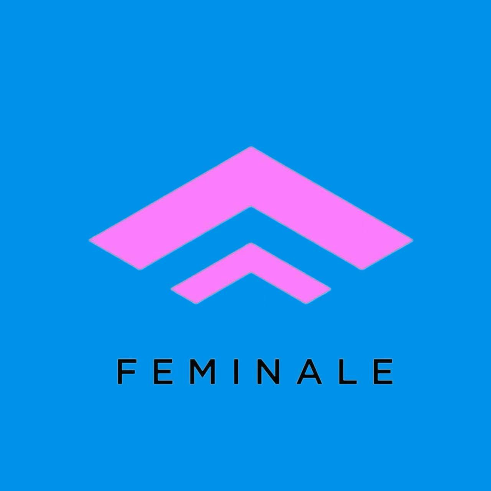
费米纳勒
Feminale 페미날레 ｜ 缘定 Yeonjeong
Feminale由 Yeonjeong 自 2018 年起组织，是一个灵活且游牧式的项目，自 2018 年以来持续探索“亚洲 + 行为艺术 + 女性自由”，已有来自世界各地的 50 多位艺术家参与。该项目曾在台湾、韩国、日本、缅甸、菲律宾、新加坡和泰国举办。最近，它于 2026 年启动了一个艺术书籍出版项目。
Feminale旨在绘制新的网络，拓展艺术交流，使其与艺术方法及我们的日常生活交织在一起；它致力于将行为艺术转化为一个融合多学科领域与多种艺术方法的跨界变革场域。
Feminale organized by Yeonjeong since 2018，Feminale is a flexible and nomadic project exploring with Asia + Performance art + Female Freedom since 2018 with over 50 participating artists from all over the world. It’s happened in Taiwan, Korea , Japan, Myanmar, Philippines, Singapore and Thailand. Recently it launched an art book publisher at 2026.
Mapping new networks and expanding artistic exchanges for tangled with artistic approaches and our ordinary life, ‘Feminale’ aims a transforming cross field for performance art combining multidisciplinary fields with various artistic approaches.
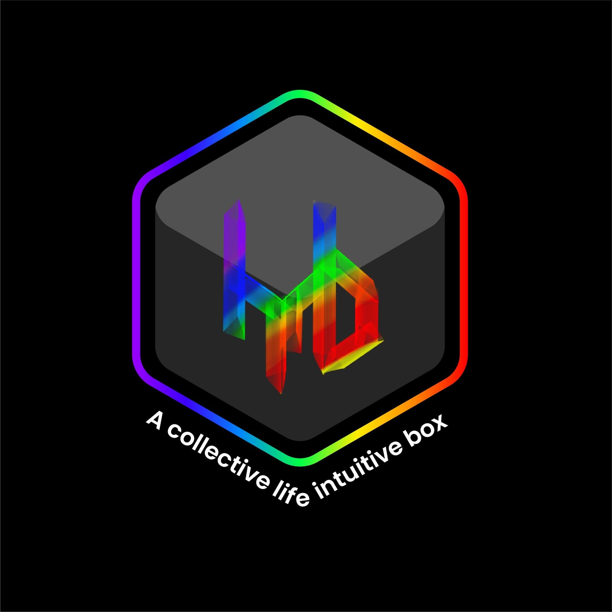
赫克西杜克西博克斯
HEXXYDUXXYBOX (HDBOX) ｜ 萨塔德鲁·索万 Satadru Sovan
HEXXYDUXXYBOX是一个具有催化性质的国际性团体，致力于推动行为艺术与表演艺术领域的对话、合作与实验。该组织于2017年在印度由 Satadru Sovan 创立，最初仅有两位成员，现已发展为一个覆盖亚洲、欧洲、非洲和美洲的全球网络。
该团体的使命是通过实验性表演实践，探索性别身份、社会正义、人权和生态意识等关键议题。HEXXYDUXXYBOX结合数字平台与实体平台，充当文化之间的创意桥梁，促进艺术交流与社区参与。自成立以来，该团体已组织169场线上活动和 30 场线下活动，举办了 22 场国内和国际工作坊，并连接了来自 70 个国家的 300 多位艺术家。它拥有超过 1000 部行为艺术视频的丰富档案，并自行出版了艺术家目录和行为艺术选集。
其旗舰项目「国际行为艺术节」（IBAF）每年在印度喜马拉雅山城德拉敦举办，现已进入第八届，曾与印度–墨西哥、南亚–哥伦比亚以及「Equinox to Equinox Live」等项目合作。疫情期间，HEXXYDUXXYBOX的线上项目成为全球艺术家的聚集地，在世界范围内维持了创意的连接与实验。该团体正通过全球驻留、影像行为艺术交流、教育推广和项目持续扩展，支持新兴艺术家和性别多样性。
HEXXYDUXXYBOXis a catalytic international collective advancing dialogue, collaboration, and experimentation in performance and live art. Founded in India in 2017 by Satadru Sovan with just two members, it has evolved into a global network covering Asia, Europe, Africa, and the Americas.
Through experimental performance practices, the collective explores critical themes including gender identity, social justice, human rights, and ecological awareness. Bridging digital and physical platforms, HEXXYDUXXYBOX acts as a creative cross-cultural bridge, fostering artistic exchange and community participation. To date, it has organized 169 online and 30 offline events, held 22 national and international workshops, and connected over 300 artists from 70 countries. It maintains an extensive archive of over 1,000 performance art videos and has self-published artist catalogues and performance art anthologies.
Its flagship project, the International Performance Art Festival (IBAF), takes place annually in the Himalayan city of Dehradun, India. Now in its eighth edition, IBAF has partnered with initiatives such as India–Mexico, South Asia–Colombia, and "Equinox to Equinox Live." During the pandemic, the collective's online programs became a global hub for artists, sustaining creative connections and experimentation worldwide. HEXXYDUXXYBOX continues to expand through global residencies, video performance exchanges, educational outreach, and projects supporting emerging artists and gender diversity.
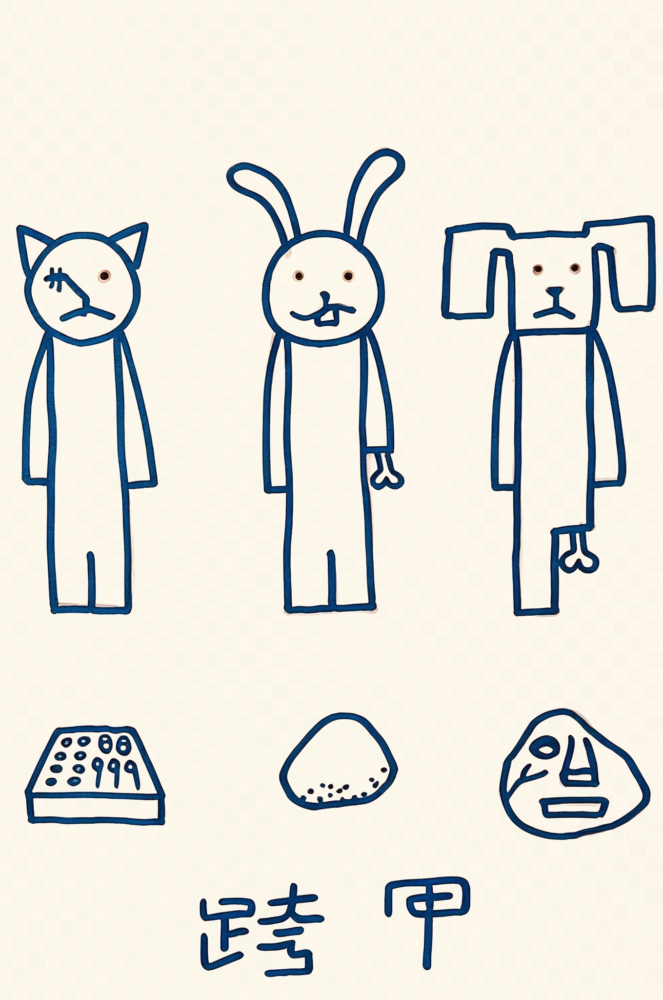
跨甲
Kua Jia ｜ 高旭 Gao Xu
2026年，由高旭在北京发起的一个现场项目，持续关注行为、声音、剧场等现场艺术形式，希望以共创的方式，通过活动和演出等方式持续进行跨媒介的艺术交流与创作实践。
Kua Jia Initiated by Gao Xu in Beijing in 2026, this is a live art project that continuously focuses on performance, sound, theater, and other forms of live art. Through co-creation, it aims to sustain cross-media artistic exchange and creative practice via ongoing events and performances.
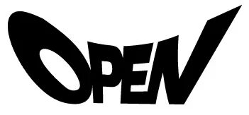
OPEN 空间
OPEN SPACE ｜ 陈进 Chen Jin
open艺术空间依托于open国际行为艺术节，open艺术空间是2007年在798艺术区开始运营，2009年在此举办第十届open国际行为艺术节，是该空间最有代表性的，目前是世界时间最长，参与艺术家最多的一次艺术节。
Open国际行为艺术节，创始于2000年，每年一届。2000年之前国内没有持续的国际行为艺术现场。2019年第20届以后，由于各种原因，到2025年才重启21届Open国际行为艺术节。艺术节是独立开放，自由发挥，符合人性化，让国内外行为艺术家现场实施作品，学术交流的一个非常重要的国际学术平台。累计有50多个国家和地区，近600多位艺术家参加，Open把国际一线行为艺术家邀请参加，也推动中国行为艺术对外输出。
open艺术空间坐落在美丽的下淤村63号。空间70平方米，是一个实验性的当代艺术空间。欢迎国际不怕试错的艺术家加入这个空间，进行独立性、自由性、人性化等多种思考方式进行深入研究和展出。
Open Art Spaceoperates under the umbrella of the Open International Performance Art Festival. Open Art Space began operating in the 798 Art District in 2007. In 2009, it hosted the 10th Open International Performance Art Festival there—the space's most representative event, which remains the longest-running festival in the world with the largest number of participating artists to date.
TheOpen International Performance Art Festival was founded in 2000 and is held annually. Prior to 2000, there were no continuous international live performance art events in China. After the 20th edition in 2019, due to various reasons, the festival was not resumed until 2025, when the 21st Open International Performance Art Festival was relaunched. The festival is independent, open, and free in its approach, aligning with humanistic values. It provides a crucial international academic platform for domestic and international performance artists to present live works and engage in academic exchange. To date, artists from over 50 countries and regions and nearly 600 artists have participated. Open invites leading international performance artists to take part while also promoting the international exposure of Chinese performance art.
Open Art Space is located at No. 63 Xiayu Village, a beautiful setting. The 70-square-meter space is an experimental contemporary art space. We welcome international artists who are not afraid to experiment and embrace trial and error to join this space for in-depth research and exhibitions exploring independence, freedom, humanistic thinking, and other modes of thought.
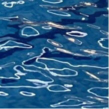
浅呼吸
Shallow breathing ｜ 黄宗镇 Huang Zongzhen
这是一个长期持续的行为艺术现场系列活动，它做关于现场的一切。当人在准备做一件比较重要或者需要集中精力有些紧张的事情之前，往往会做一次深呼吸，但是不能一直做深呼吸，因为这样可能会导致得过度换气综合症、肺部感染、心律失常等（是真的，不要轻易尝试）。紧接着是一次又一次浅浅的呼吸，缓缓的平稳的，就像打台球时最后的那颗黑八。这表示着你已经正在做这样一件事情和你的行为艺术现场了。
Shallow Breathing,This is a long-term, ongoing series of live performance art events that engages with everything about the live moment. Before a person is about to do something important, or something requiring focus and inducing nervousness, they often take a deep breath—but one cannot keep taking deep breaths, as this may lead to hyperventilation syndrome, lung infection, arrhythmia, and other conditions (this is true; do not try it casually). What follows is shallow breath after shallow breath, slow and steady, like the final black 8 ball in a game of pool. This signifies that you are already doing this very thing—and your live performance art is underway.
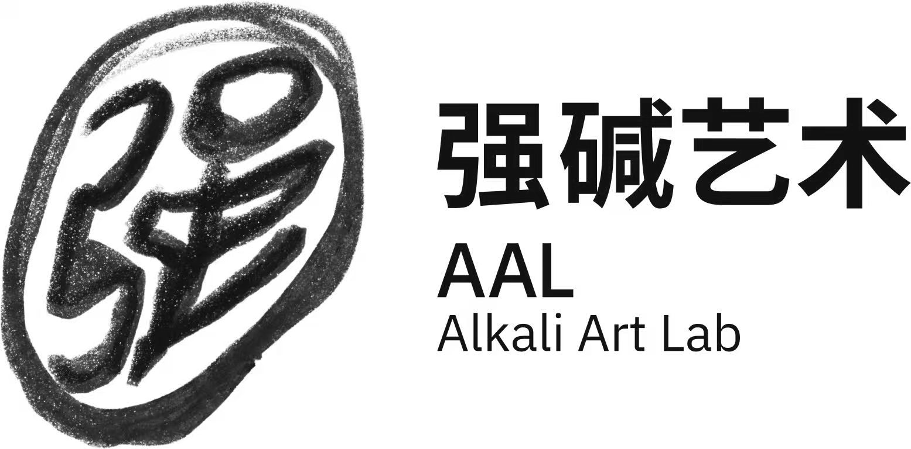
强碱
Alkali ｜ 最高 Highest
做行为艺术半个月赚100w
Making 100w in Half a Month Through Performance Art
最高.张昭昊
Highest
日本博士后
Japanese postdoctoral
www.wozhendehaokewu.com
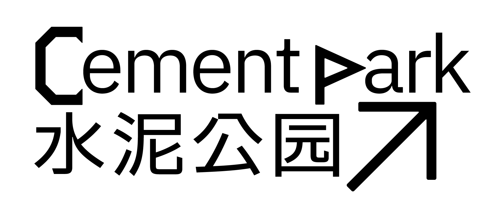
水泥公园
CementPark ｜ 吕德生 Lyu Desheng
水泥公园CementPark于2017年由上海SOWERART搜我艺术发起。2020年起以游牧式的状态保持行进。2026年起由花之外独立运营。项目常设一般每周一期水泥公园现场活动及年度艺术节。聚焦行为、表演、剧场、声音等实践，以自由、即兴与实验为基本创作取向。
CementParkwas initiated by SOWERART Shanghai in 2017. Since 2020, it has continued to operate in a nomadic manner. Starting from 2026, it is independently operated by HuaZhiWai. The project mainly features the weekly CementPark LIVE HOUSE and the annual CementPark Live Art Festival. It focuses on various forms of live art, including performance art, theatre, sound art, etc., exploring free, improvisational, and experimental modes of creation.
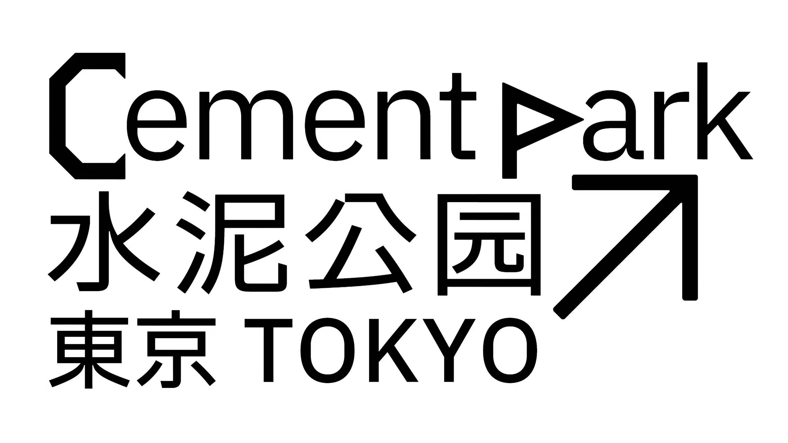
水泥公园·东京
CementPark·Tokyo ｜ 大原由 Yu Ohara
水泥公园-东京（CementPark Tokyo） 自2025年起在东京及周边地区举办，作为2017年由上海搜我艺术（SOWERART）发起的项目的卫星活动。该项目聚焦于行为、表演、戏剧、声音及其他身体表达形式，探索自由、即兴和实验性的艺术实践。
CementPark Tokyo has been held in and around Tokyo since 2025 as a satellite of a project initiated by SOWERART in Shanghai in 2017. Focusing on performance, theater, sound, and other forms of bodily expression, it explores free, improvisational, and experimental artistic practices.
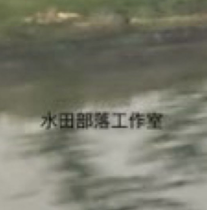
水田部落行為藝術營、貓蚯蚓
Waterfield Studio, Catmaoworm ｜ 江源祥 Chiang Yuan Hsiang
2016年，泰雅族行為藝術家瓦旦塢瑪將行為藝術／現場表演團體「水田部落工作室」從都會台北移回新竹尖石，是為創始於2004年的水田，自2009年轉進都會台北立案、走闖後的回返。新階段的水田，專注於行為藝術、現場表演的再連結及再身體化，通過「水田部落行為藝術節」與「返身南島：亞洲行為藝術節」交叉策劃，繼續著力於表現的可能性之外，亦嘗試重造場域結構。
In 2016, the Atayal performance artist Watan Wuma moved the performance art/live art collective "Waterfield Tribe Studio" from urban Taipei back to Jianshi, Hsinchu. This marked the return of Waterfield—founded in 2004—after it had relocated to urban Taipei in 2009 to register as an organization and venture into the city. In this new phase, Waterfield focuses on the reconnection and re-embodiment of performance art and live art. Through the intersecting curation of the "Waterfield Tribe Performance Art Festival" and the "Returning to the Austronesian: Asian Performance Art Festival," it continues to push beyond the possibilities of expression while attempting to reconstruct the structures of the field/site.
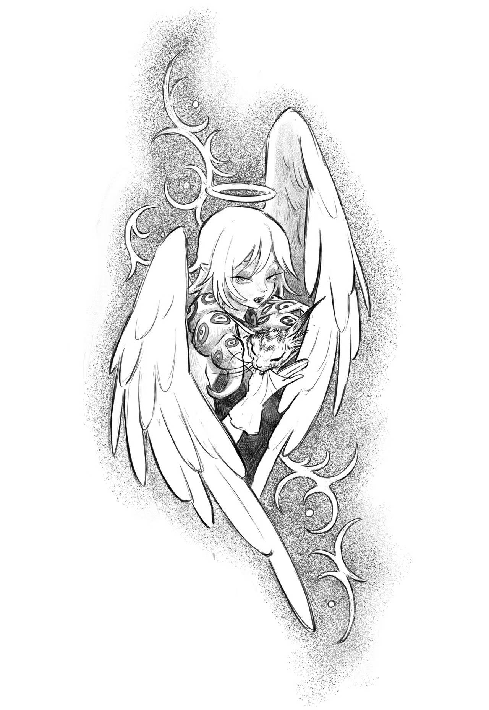
貓蚯蚓咖啡館（CatMaoworm）
座標台中的咖啡館，一個充滿矛盾集合體。我們在資本主義的縫隙裡地底翻土，把日常勞動變成一場行為藝術。這裡沒有完美的服務，只有低效率的詩意與新感覺音樂。我們是吸食孤獨的吸血鬼天使，在潰爛的柏油路上，練習如何疲憊又神聖地活著。來這裡，允許自己暫停，當一個不被系統更新的錯亂代碼。
CatMaoworm Café，Located in Taichung, this café is a collection of contradictions. We burrow through the soil in the crevices of capitalism, turning everyday labor into a performance art piece. There is no perfect service here—only inefficient poetry and neo-sensory music. We are vampire angels feeding on solitude, practicing how to live both exhaustedly and sacredly on the rotting asphalt. Come here, allow yourself to pause, and be a glitched piece of code that the system refuses to update.
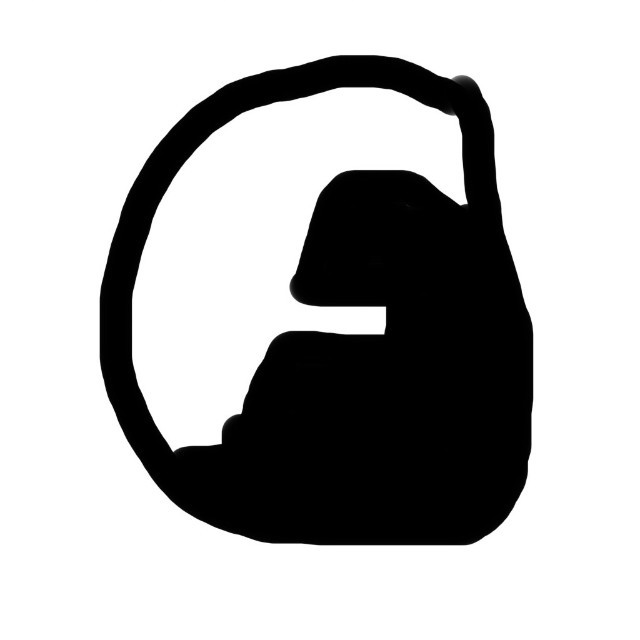
塔院
Ta-Academy ｜ 阿莫 Taikonot
塔院是由阿莫、程一人和朱宏宇在2022年的年末发起的一个实验性艺术教育项目，实体空间于2023年7月落地成都，目前主要由阿莫和程一人负责项目的经营和推进。
我们在成都开展基础美育、组织艺术现场，同时会以塔院的名义参加全国各地的艺术活动以及展览项目，试图在国内创造一种别样的艺术生态模式。空间以一种更适民间的低精致与轻量级的方式运转着，与朋友们一起探索、共同劳作。
我们活动的宗旨是！
轻松但认真。
Ta-Academy is an experimental art education project initiated by Taikonot, Cheng Yiren, and Zhu Hongyu in late 2022. Its physical space was established in Chengdu in July 2023, and is currently managed and advanced primarily by Amo and Cheng Yiren.
In Chengdu, we carry out basic aesthetic education and organize art happenings (live art events). At the same time, under the name of Ta-Academy, we participate in art activities and exhibition projects across the country, attempting to create an alternative art ecological model in China. The space operates in a grassroots, low-refinement, and lightweight manner, exploring and working together with friends.
Our guiding principle:Relaxed, yet serious.
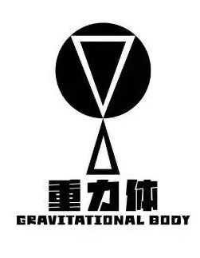
重力体
GRAVITATIONAL BODY ｜ 林中飞 Lin Zhongfei
「重力体」发轫于2021年-2024年每年一次的厦门「呓勃会」。以“不稳定的中子”小组为核心策展组织，2025年以「重力体」为名开展现场艺术。
「重力体」意指「行動中的身体」。「重力体」以行为艺术为焦点，延伸至各类现场艺术形式，主要活动包含重力体研习社、重力体轻现场、重力体艺术节等。目前主要在福建省内开展活动。
Gravitational Body grew out of Yibohui, a gathering held each year in Xiamen from 2021 to 2024. With the Unstable Neutron collective at the core of its curatorial team, the group began presenting live art under the name Gravitational Body in 2025.
The name Gravitational Body means “the body in action.” The group focuses on performance art and also works across other forms of live art. Its main programs include the Gravitational Body Study Group, Gravitational Body Light Live, and the Gravitational Body Art Festival. The group is currently active mainly in Fujian Province.
关于 LALM
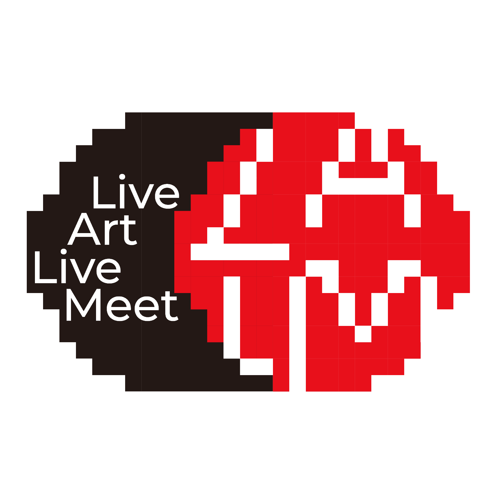
LALM（Live Art Live Meet），暂时还没有一个成型的介绍，希望通过这次meeting活动碰出一些有趣的想法。
关于丄美术馆
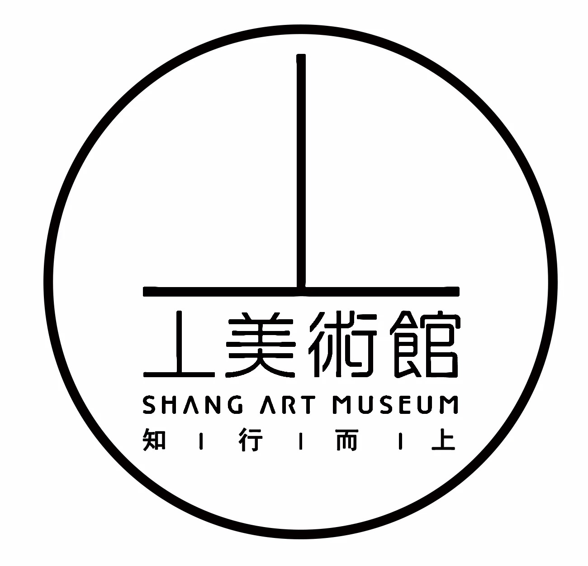
丄美术馆2019年创立于杭州市萧山区河上镇，丄美术馆致力于创建艺术服务于公众的互动空间。与中国本土及国际范围内的知名和新锐艺术家展开广泛合作，重视学术梳理、连接当代与传统，促进中国艺术环境的多元化发展,持续关注并致力于推广中国新生代艺术家发展。美术馆举办各类学术性的展览和公共项目，持续性地的融入中国艺术发展的潮流，积极参与国际艺术交流。同时，将国际最前沿和主流的艺术思想引入国内，树立以学术性和开放性为特点的美术馆品牌。
丄美术馆艺术园区占地面积12亩，建筑面积10000平方米。是一座集艺术展览、艺术收藏、艺术创作、学术研究、公共教育、国际交流等多种功能于一体的综合性公益美术馆。馆名“丄”寓意“知行而上”，即以知行合的理念，让高端艺术落地现实社会和日常生活，从而真正成为民众的艺术和社会的艺术。
关于水泥公园
水泥公园CementPark于2017年由上海SOWERART搜我艺术发起。2020年起以游牧式的状态保持行进。2026年起由花之外独立运营。项目常设每周一期水泥公园现场活动及年度艺术节。聚焦行为、表演、剧场、声音等实践，以自由、即兴与实验为基本创作取向。
CementPark was initiated by SOWERART Shanghai in 2017. Since 2020, it has continued to operate in a nomadic manner. Starting from 2026, it is independently operated by HuaZhiWai. The project mainly features the weekly CementPark LIVE HOUSE and the annual CementPark Live Art Festival. It focuses on various forms of live art, including performance art, theatre, sound art, etc., exploring free, improvisational, and experimental modes of creation.
展览信息
工作团队 WORK TEAM
问地 Wen-Di Wu
王一土 Wang Yitu
吕德生 Lyu Desheng
观察员 OBSERVERS
（ ）
王一土 Wang Yitu
郑一方 Zheng Yifang
主办 Organizer
水泥公园 CementPark
协办 Co-organizer
丄美术馆 Shang Art Museum
孵创作者社区 Fu Art Coliving
地址 Venue
浙江省杭州市萧山区河上镇下门村泽坞墅2号，丄美术馆
Shang Art Museum, No. 2, Zewushu, Xiamen Village, Heshang Town, Xiaoshan District, Hangzhou, Zhejiang Province